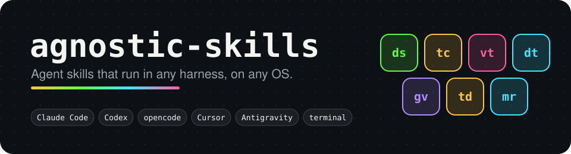
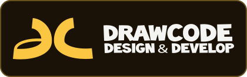
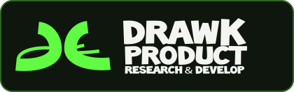
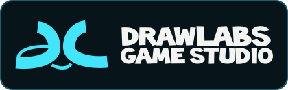

thread-cost
See what each turn costs, get alerts in steps, and hand off before a thread gets expensive.

Drop-in skills for coding agents. Each one is a folder your agent reads, plus small python scripts that do the repeatable parts, so the model spends its tokens on judgment.
Works in Claude Code, Codex, opencode, Cursor, Antigravity, or a bare terminal.
Plain python3, standard library only. No pip installs, no network calls.
Nothing personal baked in: settings come from env vars or a small config file.
See what each turn costs, get alerts in steps, and hand off before a thread gets expensive.

Route each piece of work to the cheapest model tier that can finish it, with lean subagent profiles.

Pick the model for a spawn from its brief, and make a missed model land on the mid tier. Install with tiered-delegation.

Turn repeatable steps into scripts with one contract, and block secrets and home paths before they commit.

Install, tap, swipe, screenshot and wait on logs on an attached Android phone or iPhone, with one command set.

Prove a gameplay fix in a live round, measure it, and keep the player's save safe. Any engine.

Crop a recording to the app, cut the frozen stretches, scrub notification banners, and join clips with chapters.
More are on the way.
Copy the folder. Put skills/<name>/ where your harness looks for skills, and leave it there (hooks call its scripts by absolute path).
Follow its INSTALL.md. Installers report first and change nothing until you pass --write.
| Harness | Folder |
|---|---|
| Claude Code | ~/.claude/skills/<name> (all projects) or <repo>/.claude/skills/<name> |
| Codex, opencode | ~/.agents/skills/<name>, or the harness's own skills folder |
| Anything else | Any fixed folder, plus a pointer to its SKILL.md in your always-loaded rules (AGENTS.md, GEMINI.md, and so on) |
Reports what it would change, and changes nothing until you pass --write.
Backs up each file it touches.
Uninstalls cleanly.
A skill that drives outside tools (ffmpeg, adb, Xcode) lists them in its INSTALL.md.
Every skill follows the same few rules. AUTHORING.md shows how to write your own the same way.
Each skill reads its settings from environment variables, then its own KEY=value file (~/.config/<skill>/config.env, or %APPDATA%\<skill>\config.env on Windows), then the defaults. No config file is needed.
State goes in the per-user state folder (${XDG_STATE_HOME:-~/.local/state}, or %LOCALAPPDATA% on Windows), never in your project.
A hook that hits an error prints nothing and exits 0, so it never breaks a turn.
To tune a skill for your setup without forking it, keep an addons/<name>.addon.md beside its SKILL.md. Record only what differs (for example your capture step or where your notes live). The agent reads the base first, then the add-on, and the add-on wins on conflict.
These skills run every day across our studios' app, game and web work.
  
drawcode.com · drawk.com · drawlabs.com · Docs site